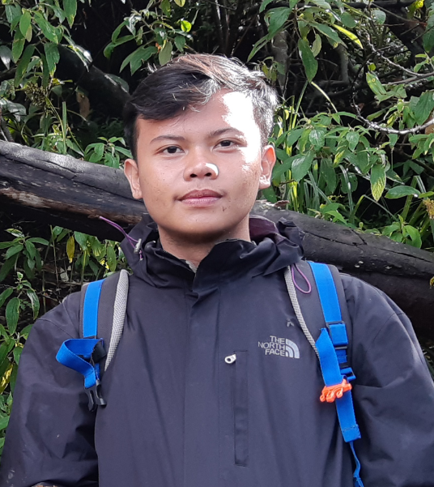

Curiculum Vitae |
||
|---|---|---|
|  | ABDUL HILMY TANANDAJunior Programmer |
|
|
KontakAlamat:Kp. Pekopen Timur RT01/01 Ds. Lambang Jaya Kec. Tambun Selatab, Bekasi. Email: abdulhilmy17@gmail.com No. HP: 087775391275 Github: https://github.com/abdulhilmy17 OrganisasiPencak Silat:Asisten Pelatih 2017 - 2018 Kelebihan & KekuranganSaya memiliki kekuranganyaitu harus berulangkali untuk memahami sesuatu, tetapi hal itu bisa saya atasi dengan belajar secara berulang-ulang sampai saya memahaminya. Kelebihan saya antara lain: Dapat bekerja dalam tim, dapat beradaptasi dengan lingkungan, bertanggungjawab dan memiliki keinginan belajar yang kuat. |
ProfilSaya lahir di Bekasi,17 Desember 2000. Saya menyukai olahraga, antara lain: joging, berenang, dan tenis meja. Saya mempunyai rasa ingin tahu yang tinggi dan kemauan untuk belajar Pengalaman yang dimiliki membuat web e-commerce menggunakan Node JS. Riwayat PekerjaanOPERATORPT Chandra NugerahCahya Juni 2019 - Oktober 2019 OPERATOR (PKL)PT Fukoku IndustriesIndonesia Juli 2017 - Oktober 2017 Riwayat Pendidikan
SEKOLAH
Juni 2020 - |
Kemampuan
|